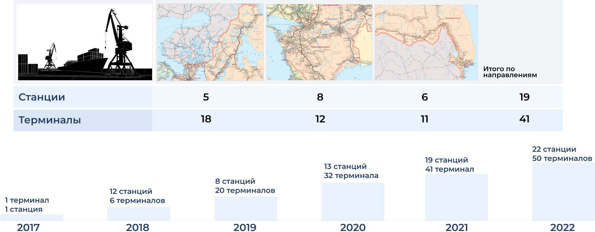

Тиражирование АС ДИЛС
Возможности применения Дорожной Информационной Логистической Системы создали предпосылки для её широкого внедрения как для припортовых станций, так и для станций погранпереходов

Выводы:
Недостатки мультимодальной перевозки
Фактически мультимодальная перевозка грузов имеет один недостаток: Процесс транспортировки зависит от компетентности и опытности логистов выбранной транспортной компании. Из-за неправильного выбора маршрута товар может не быть вовремя доставлен в аэропорт (или морской порт). Из-за этого придется договариваться о другом рейсе или ждать другое судно. Такие просчеты увеличивают срок доставки груза. А это ведет к потере прибыли клиента.
Преимущества мультимодальной перевозки
-
Сокращение расходов заказчика. Сотрудничество с одной компанией в любом случае обойдется дешевле, нежели работа с разными отдельными перевозчиками.
-
Снижение сроков доставки. Если соединить самолет и автотранспорт, то перевозка груза займет намного меньше времени, чем его транспортировка только грузовыми машинами.
-
Возможность доставлять груз с любой точки земного шара. Для компаний, занимающихся внешнеэкономической деятельностью, мультимодальные перевозки – это настоящий клад. Они могут легко доставить товар с любого государства, даже несмотря на то, что оно находиться на другом континенте.
-
Безопасность груза. Если работать с одной компанией, то вся ответственность за сохранность груза лежит на ней. В свою очередь, выбирая разных перевозчиков, нельзя гарантировать того, что во время передачи груза ему не будет нанесен урон.